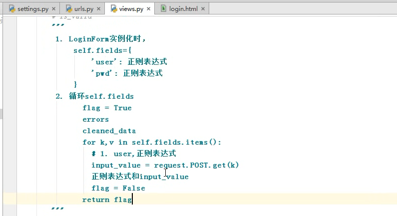
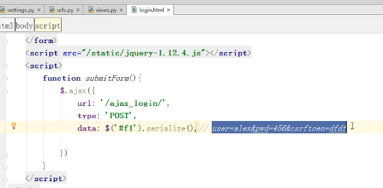
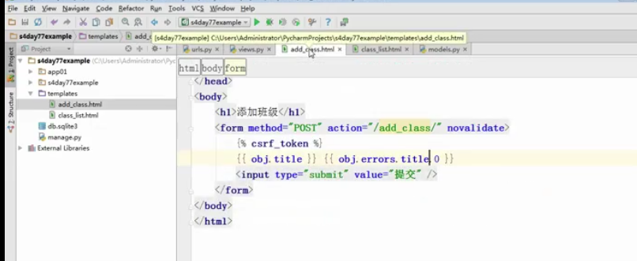

day77-02-内容回顾
请求生命周期
1：先经过wsgi
2：到达django的中间件
3：到达视图
4：再返回给中间件
5：返回给wsgi
session是什么
1：保存在服务端的键值对
2：服务端生成随机字符串，把值返回给客户端作为cookie
csrf-xss
1：xss（用户输入js代码）
alert()
2：csrf
用于在post请求时：携带随机字符串
day77-03-验证流程分析
form组件的作用
1：用于用户提交数据校验
2：保留上次输入内容
form目前的三个方法
1：obj = validform(request.POST)
2：obj.is_valid()
3：obj.cleaned_data() -返回的是一个字典
4：obj.errors -返回是对象
form验证过程的讲解

day77-04-form和ajax验证
ajax提交form表单的内容

day77-05-alax显示错误信息
js语法
1：创建标签
var tag = document.createElement('span')2：each的使用
$.each(iter,function(index,value){
tag.innerHtml = value[0];
})3：find查找标签
$("#f1").find("input[name='+ index+']")
拼接字符串，明确字符的开头和结尾4：ajax提交数据
返回数据的类型
datatype:JSON
$.ajax({
url:"xxx/xxx",
data:"xxx",
type:"post",
datatype:"JSON",
success:function(args){
console.log(args)
},
})day77-08-form组件内容梳理
06-07-09缺失-pass
day77-10-上节内容梳理
缺失两节
day77-12-班级管理实例
如何通过form的方式保留用户提交的数据
1：通过form生成表单
classForm(Form):
title = fields.Re(‘’)
在前端就会生成form表单
以下是在视图中的写法：
def add_class(request):
if request.method == "GET":
obj = classForm()
return render(request,'xxx.html',{"obj":obj})
else:
obj = classForm(request.POST)
if obj.is_valid:
modles.XX.objects.create(**obj.cleaned_data)
return redirect('/class_list/')
return render(request,'add_class.html',{"obj":obj})以下是在前端中的写法：

day77-14-样式调整
1：pass